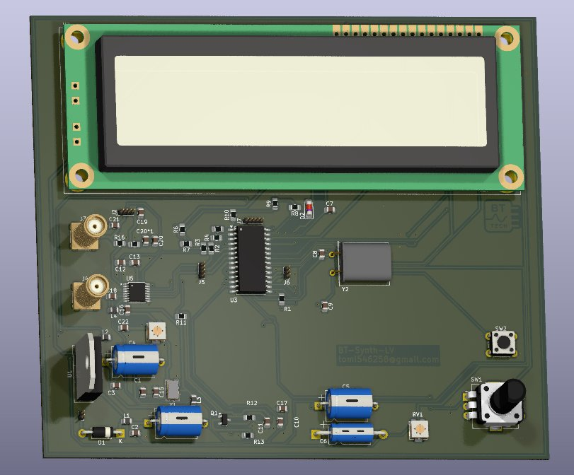
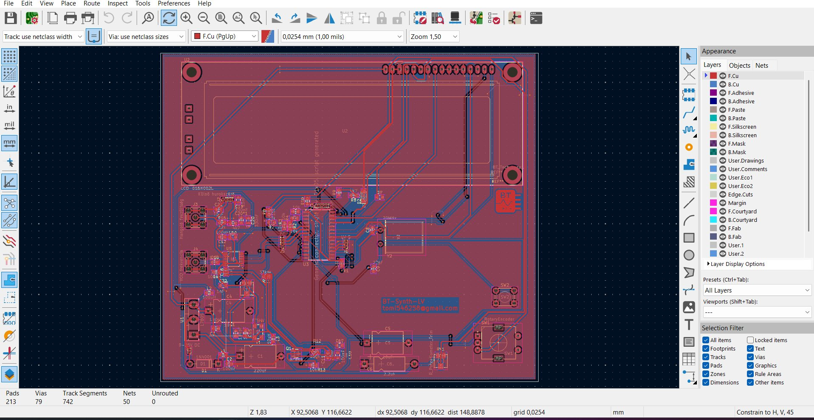

A BT-Synth-1V egy saját tervezésű frekvenciaszintézer Texas Instruments LMX2316 PLL IC alapján.
A tervezés célja egy stabil, széles sávban hangolható RF jelforrás, amely LCD kijelzőn mutatja a beállított
frekvenciát, rotary encoderel vezérelhető, és SPI buszon kommunikál a PLL-lel.
A nyomtatott áramköri lapot KiCad-ben terveztem — saját footprintekkel, impedanciavezérelt
RF vonalakkal és gondosan megtervezett tápellátással.
Fotók — 3D render és KiCad layout

KiCad 3D render — LCD + SMA csatlakozók + rotary encoder + LMX2316

KiCad PCB layout — F.Cu rézréteg · 213 pad · 79 via · 742 track · 50 net · 0 unrouted
LMX23x6 sorozat — a PLL IC részletesen
Az LMX2595 a Texas Instruments egyik legfejlettebb wideband frequency synthesizer IC-je.
Egyetlen chipen tartalmaz egy teljes PLL-t (Phase-Locked Loop), egy VCO-t (Voltage Controlled Oscillator),
programmable dividereket és egy delta-sigma modulátort törtszámú osztáshoz.
A chip 10 MHz–19 GHz tartományon képes RF jelet generálni — ez egyedülálló egyetlen IC-nél.
LMX2595 belső blokkdiagram
Frekvenciatartomány
100 MHz – 1200 MHz
LMX2316; LMX2326: 100–2800 MHz
Referencia bemenet
tipikusan 5–40 MHz
VCTCXO 13 MHz (P2 trimmerrel), vagy kvarcoszcillátor
Fáziszaj (1 GHz-en)
referencia minőségétől függ
N/R arány sokszorozza a zajt
Kommunikáció
SPI (3-wire, csak írás)
21 bites shift register, DATA+ADDRESS+FLAG
Kimenet
1× RF kimenet a VCO-tól
0–5V hangolófeszültség a VCO-hoz
Tápfeszültség
9–25V (tápvonal), 5V belső LDO
22 mA áramfelvétel kijelző nélkül
Tok
20-pin SSOP
SMD tok, kézzel forrasztható
Loop filter
Külső passzív elemek
R, C értékek sávszélességet meghatározzák
Hogyan működik a PLL — mélyen
A PLL alapelve és a lock folyamat▸
A PLL (Phase-Locked Loop) egy visszacsatolt frekvenciaszabályozó rendszer. Lényege:
1. A VCO (Voltage Controlled Oscillator) generál egy nagy frekvenciájú jelet
2. Egy programozható osztó (N divider) leosztja a VCO kimenetét
3. A fáziskomparátor (PFD) összehasonlítja az osztott jelet a referenciával
4. A különbségből charge pump áramot generál
5. A loop filter simítja ezt feszültséggé → ez vezérli a VCO-t
6. A rendszer addig korrigál, míg a fázishiba nullává válik → lock állapot
Lock állapotban: f_out = N × f_ref / R, ahol R a referencia osztó.
Az LMX2595-ben N lehet törtszám (FRAC/MOD regiszter) — ez az, ami 1 Hz lépésközű hangolást tesz lehetővé GHz-es tartományban is.
Delta-sigma modulátor — törtszámú osztás▸
Az LMX2595 3. rendű delta-sigma modulátort tartalmaz a törtszámú N osztóhoz.
Egész osztóval pl. N=100 és f_ref=10 MHz → f_out = 1000 MHz. De mi van, ha 1001.5 MHz kell?
N=100.15 nem létezik egész osztóban — ezért a delta-sigma modulátor időben váltogatja
N=100 és N=101 között, oly gyorsan, hogy az átlag pontosan 100.15 legyen.
A loop filter simítja ki a váltogatásból eredő zajt (fractional spurs).
Az LMX2595 egyedülálló FRAC_ORDER és DITHER beállításokkal
minimalizálja ezeket a spurious emissziókat.
Eredmény: f_out = (N + FRAC/MOD) × f_PFD — ahol FRAC/MOD akár 0.000001 is lehet.
Loop filter tervezés — a kritikus lépés▸
A loop filter a PLL egyik legtöbbet tervezett alkatrésze — passzív R és C elemek,
amelyek meghatározzák a rendszer dinamikáját.
Loop bandwidth (LBW) — pl. 10 kHz: ennél kisebb frekvenciájú zavarokat a PLL
korrigálja, ennél nagyobbakat nem. Kisebb LBW = jobb fáziszaj messze, de lassabb lock idő.
Phase margin — tipikusan 45–65°: a stabilitást jellemzi. Túl kicsi → oszcillál.
A TI WEBENCH PLL tervező eszközével számoltam ki az értékeket:
• C1, C2, C3 — szűrő kondenzátorok a charge pump kimenetén
• R2, R3 — a stabilitást biztosító rezisztorok
A loop filter elemei közvetlenül a chip mellé kerültek a NYÁKon — minél rövidebb a
vezető, annál kisebb a parazita induktivitás hatása.
SPI programozás — regisztertérkép▸
Az LMX2595 113 darab 32-bites regisztert tartalmaz (R0–R112). Programozáshoz:
• CSB le (chip select aktív)
• 32 bites adat soros átvitele: [R/W bit][6 bites cím][24 bites adat]
• CSB fel → belső regiszter frissül
A legfontosabb regiszterek:
• R34 — PLL_NUM: törtszám numerátor (FRAC)
• R35 — PLL_DEN: törtszám nevező (MOD)
• R36 — PLL_N: egész osztó értéke
• R44 — OUTA_PWR: A kimenet teljesítményszintje
• R45 — OUTB_PWR: B kimenet teljesítményszintje
• R0 — FCAL_EN: kalibrációs ciklus indítása (kötelező a beállítás után!)
Fontos: az LMX2595-öt minden frekvenciaváltás után R0-val kell kalibrálni
(FCAL_EN=1 bit), különben a VCO nem lock-ol megfelelően.
Fáziszaj és spurious — mire figyelj▸
A PLL kimeneti jel minőségét két szám jellemzi legjobban:
Fáziszaj (Phase Noise) — dBc/Hz egységben, offset frekvencia függvényében.
Pl. referencia minőségétől függ offset 1 GHz-en: a vivőtől 10 kHz-re az oldalnyáj 110 dB-lel
kisebb, mint a vivő. Minél negatívabb, annál jobb.
Fáziszajt befolyásolja: referencia minősége, loop bandwidth, VCO belső zaj, tápvonal zaj.
Spurious emisszió — nem kívánt melléktermékek a spektrumban.
Forrásai: PFD frekvencia harmónikusai, frakcionális spurs (delta-sigma zajból),
tápvonal kicsatolás. Az LMX2595 DITHER beállítása segít csökkenteni.
Tervezési tanács: analóg és digitális tápvonalak szeparálása, decoupling
kondenzátorok minden táplábon (100nF + 10µF párhuzamosan), RF kimenet 50Ω-ra illesztése.
Interaktív — frekvencia kalkulátor
f_ref (referencia)MHz
N = B×32+A (osztó)
A (nyelőszámláló, 0–31)
B (programozható, 31–8191)
RDIV (referencia osztó)
NYÁKterv — KiCad, RF és EMC szempontok
Rézrétegek és stack-up▸
A BT-Synth-1V 2 rétegű NYÁKon készült (F.Cu + B.Cu), FR4 alapanyagon.
• F.Cu (felső rézréteg) — aktív alkatrészek, RF vonalak, SPI busz, vezérlőlogika
• B.Cu (alsó rézréteg) — összefüggő földsík (ground plane) az egész lapot lefedi
A folyamatos B.Cu ground plane kritikus RF szempontból: minimalizálja az impedanciáját
a visszatérő áramoknak, csökkenti a sugárzást és javítja a szignálintegritást.
Stack-up: FR4 1.6mm · Cu 35µm mindkét oldalon · HASL felület
Impedanciavezérelt RF vonalak — microstrip▸
Az RF jel útján minden vezető 50Ω karakterisztikus impedanciára van tervezve.
FR4 (εr ≈ 4.3) és 1.6mm vastagság esetén a microstrip formula:
Z₀ = 87 / √(εr+1.41) × ln(5.98h / (0.8w+t))
Ahol h = dielektrikum vastagsága, w = vezető szélessége, t = réz vastagsága.
1.6mm FR4-en ez kb. 2.9mm széles vezető ad 50Ω-ot.
Az SMA csatlakozóktól az LMX2595 kimenetéig minden RF vonal ezen a szélességen fut.
Fordulóknál 45°-os chanfer (nem 90°!) csökkenti az impedanciaugrást.
A KiCad Interactive Router segít a nyomvonalak konzisztens szélességen tartásában.
Decoupling és tápellátás tervezés▸
Az LMX2595 érzékeny a tápvonal zajra — a VCC_VCO és VCC_SYNTH lábak szeparált
szűrést igényelnek.
Decoupling stratégia minden táplábon: • 100nF X7R 0402 (nagyfrekvenciás zaj szűrése) — a lap közvetlen mellé
• 10µF tantal vagy elektrolit (alacsony frekvenciás stabilizálás)
• Ferrit bead a digitális és analóg tápvonalak szétválasztásához
Tápvonal szeparáció: digitális (ATmega, LCD) és analóg (LMX2595, VCO)
tápvonalak fizikailag szét vannak választva, és csak egy ponton találkoznak (star point).
Ez megakadályozza, hogy a digitális switching zaj becsatoljon az analóg részbe.
A KiCad DRC (Design Rule Check) az összes clearance és via-méret
szabályt ellenőrzi — 0 hiba, 0 warning a végleges layoutban.
Via és ground stitching▸
A layoutban 79 via van — ezek nagy része nem jelváltó, hanem
ground stitching via.
A ground stitching lényege: az F.Cu (felső) ground szigetek rendszeresen össze vannak
kötve a B.Cu ground plane-nel viákon keresztül. Ezzel:
• Megszüntetjük a "floating ground" foltokat
• Rövidítjük a visszatérő áramok útját
• Csökkentjük a ground induktivitást RF frekvencián
Az LMX2595 thermal pad-je (középső GND pad) 9 via-val van összekötve
a B.Cu ground plane-nel — ez egyszerre biztosítja a termikus és RF-GND kapcsolatot.
A via-k átmérője: 0.6mm furat, 1.0mm réz annular ring — a gyártáshoz optimális arány.
Alkatrésztömbök, footprintek — KiCad workflow▸
A BT-Synth-1V designfolyamata:
1. Schematic (KiCad Schematic Editor) — az összes alkatrész és kapcsolat definiálása,
net-ek elnevezése, power flag-ek elhelyezése
2. BOM + netlist generálás → PCB editorba importálva
3. Footprint hozzárendelés — az LMX2595-höz saját WQFN-40 footprint,
0402 passzívokhoz standard KiCad könyvtár
4. PCB layout — alkatrésztömb kritikus sorrendben:
LMX2595 első → loop filter mellé → decoupling kondik a lapok mellé → SMA connectors →
PIC16F876 + LCD → végül routing
5. DRC + ERC — szabályok: 0.15mm clearance, 0.2mm min track width,
minden net lezárt
6. Gerber generálás → gyártónak (JLCPCB vagy PCBWay)
A 3D render a KiCad beépített 3D viewer-éből készült — az összes alkatrésznek van 3D modellje
(STEP vagy WRL formátum).
F.Cu
Aktív réteg, RF vonalak, vezérlés
B.Cu
Összefüggő ground plane
F.Silkscreen
Alkatrész jelölések, ref. designok
F.Mask
Forrasztómaszk kivágások
Edge.Cuts
NYÁKlap kontúr, méret
F.Courtyard
Alkatrésztér, DRC ütközés
Tapasztalat és tanulságok
A BT-Synth-1V tervezése során a legnagyobb kihívás az RF és digitális részek egymás melletti
elhelyezése volt — a mikrocontroller SPI órajele és az LMX2595 RF kimenete ugyanazon a lapon osztozik.
A ground plane folyamatossága és a fizikai szeparáció együtt oldotta meg ezt.
Az LMX2595 dokumentációja 113 oldalas és rendkívül részletes — az FCAL kalibrációs lépés
hiányán sokat debuggoltam mielőtt rájöttem, hogy minden frekvenciaváltás után kötelező.
A KiCad-del való munka megmutatta, mennyire erős egy ingyenes EDA eszköz lehet — a 3D render,
az impedanciaszámítás és a DRC mind beépített, nincs szükség drága szoftverekre.